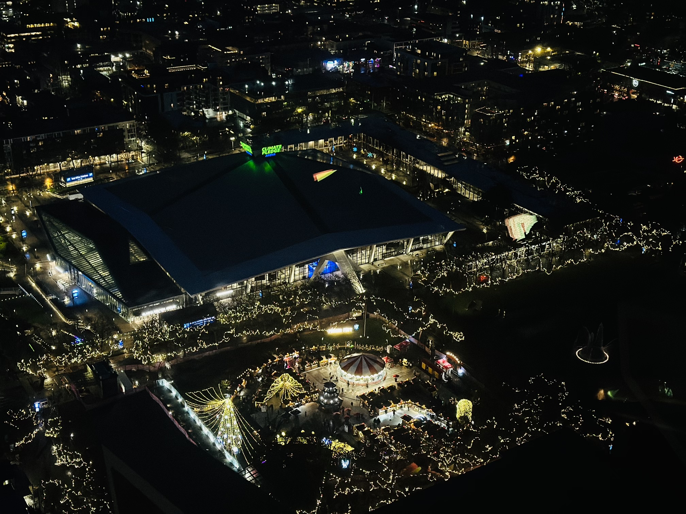

Seattle
Seattle is a seaport city on the West Coast of the United States. It is the seat of King County, Washington. With a 2022 population of 749,256 it is the most populous city in both the state of Washington and the Pacific Northwest region of North America, and the 18th most populous city in the United States. Seattle is situated on an isthmus between Puget Sound (an inlet of the Pacific Ocean) and Lake Washington. It is the northernmost major city in the United States, located about 100 miles (160 km) south of the Canadian border.
Top attractions
-
 Pike Place
Pike Place
- Pike Place Market is a public market in Seattle, Washington, United States.
- It opened on August 17, 1907, and is one of the oldest continuously operated public farmers' markets in the United States.
- Overlooking the Elliott Bay waterfront on Puget Sound, it serves as a place of business for many small farmers, craftspeople and merchants.
- The story of Starbucks begins in 1971 along the cobblestone streets of Seattle’s historic Pike Place Market.
-
 Gas Works Park
Gas Works Park
- Gas Works Park incorporates numerous pieces of the old plant.
- Some stand as ruins, while others have been reconditioned, painted, and incorporated into a children's "play barn" structure, constructed in part from what was the plant's exhauster-compressor building.
- A web site affiliated with the Seattle Times newspaper said, "Gas Works Park is easily the strangest park in Seattle and may rank among the strangest in the world."
-
 Great Wheel
Great Wheel
- The Seattle Great Wheel is a 53-meter tall giant Ferris wheel at Pier 57 on Elliott Bay in Seattle, Washington, United States.
- At an overall height of 175 feet (53.3 m), it was the tallest Ferris wheel on the West Coast of the United States when it opened in June 2012.
-
Seattle Aquarium
- The Seattle Aquarium is a public aquarium in Seattle, Washington, United States, located on Pier 59 on the Elliott Bay waterfront.
- It opened in 1977 and has been accredited by the Association of Zoos and Aquariums (AZA).
- In partnership with Nintendo of America, some of your favorite characters from the Animal Crossing™: New Horizons game on the Nintendo Switch™ system are embarking on a new adventure at the Seattle Aquarium this fall.
- It’s the first aquarium experience like this in North America!
-
UW
- The University of Washington (UW) is a public research university in Seattle, Washington.
- Founded in 1861, approximately a decade after the founding of Seattle, the University of Washington is one of the oldest universities on the West Coast of the United States.
- People can view Mount Rainier viewed from Drumheller Fountain.